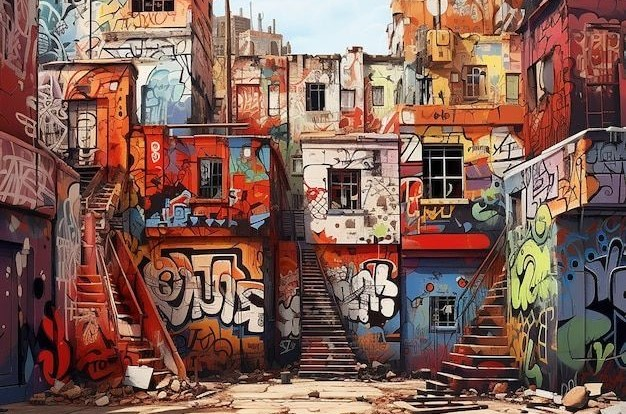

From ancient temples to modern skylines, cities are living museums of culture.
Wander through vibrant streets, taste authentic cuisines, and embrace traditions that
have stood the test of time. Let’s dive into the soul of cities worldwide.
The Heart of Culture
Culture is reflected in music, dance, art, and traditions. Walking through a local
festival is like stepping into a storybook — every color, sound, and smile tells
something about the community’s identity.


"A city’s culture is not just in monuments, but in the everyday lives of its people."
Exploring Cities
Cities are not just concrete jungles; they are hubs of creativity and heritage.
From the street markets of Marrakech to the neon lights of Tokyo, each destination
blends history with modernity in its own unique way.
Take a stroll through old towns, where cobblestone streets meet artisan shops, or
explore futuristic skyscrapers with breathtaking views. The contrast is what makes
traveling through cities so magical.
Food & Lifestyle
Food is the heartbeat of any city. Whether it’s a street-side vendor serving local
delicacies or a high-end restaurant offering gourmet experiences, cuisine connects
people and cultures across the globe.
Every city has its rhythm. To truly know a place, you must walk its streets, taste its food,
and share stories with its people. That’s the essence of cultural exploration. 🌆✨